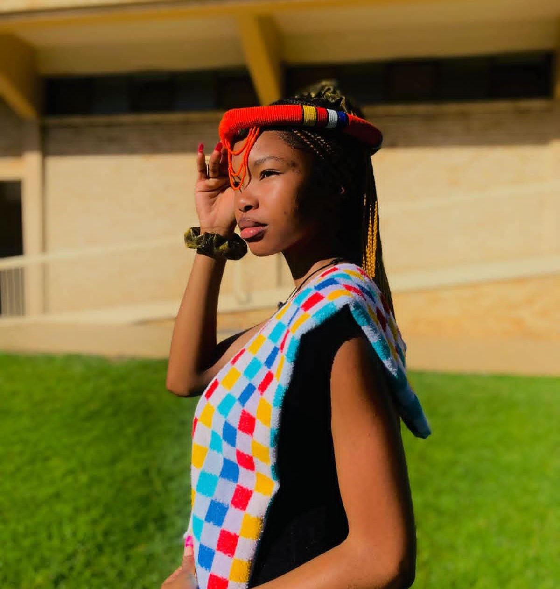
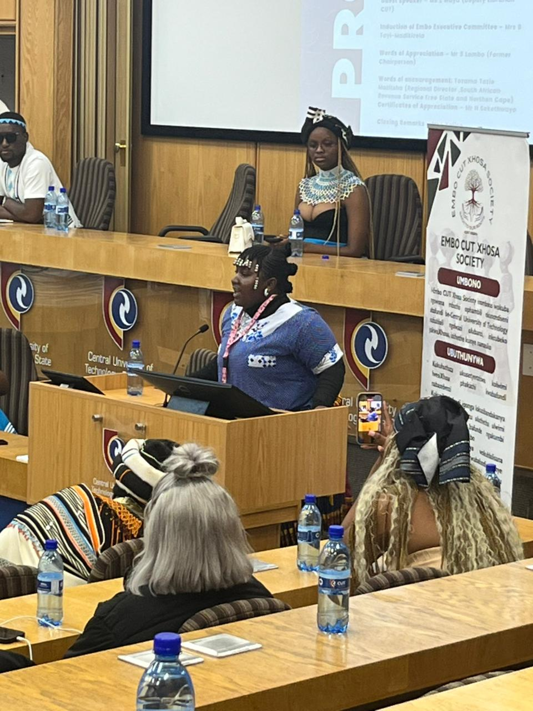
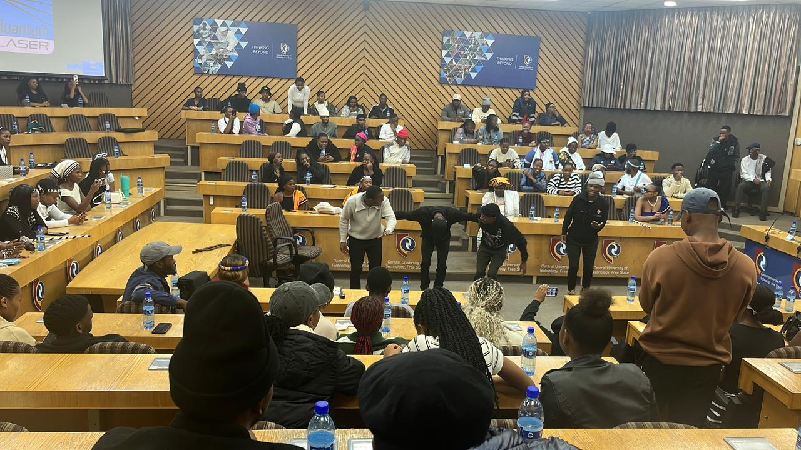
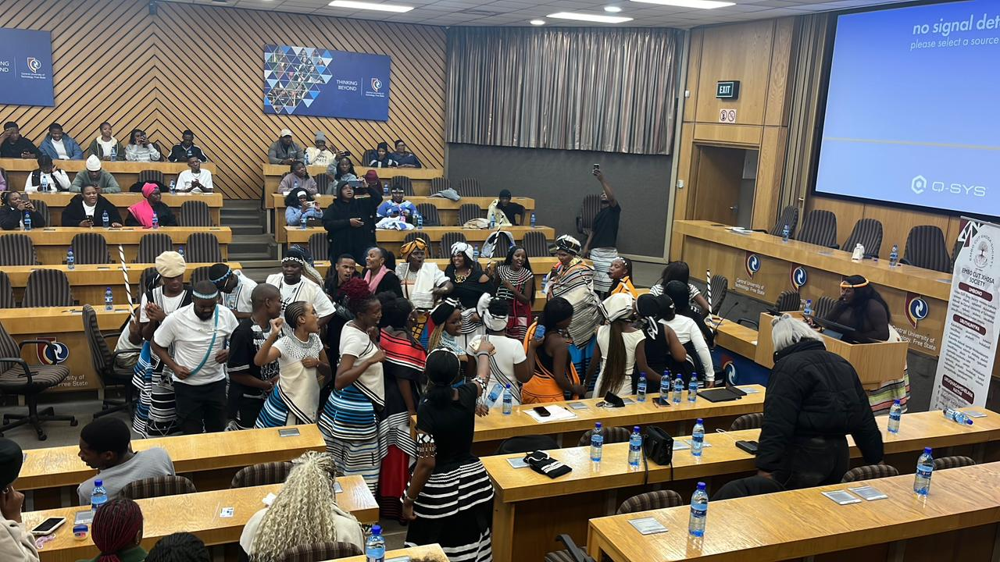
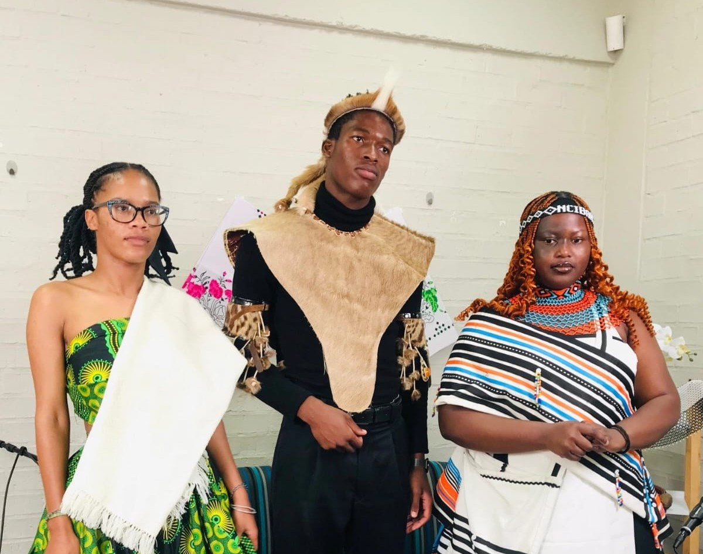

Welcome to Mangaung Dance Performance website
This website records and celebrates the diverse dance heritage of the Mangaung community. By documenting historical roots, cultural meanings, and artistic expressions, the project aims to support cultural preservation, academic research and community engagement.
Our Journey
Focus
We have selected four dance forms for in depth study:
Welcome to the Mangaung Dance Project by MS Kams Group
Purpose
The site aims to:
(1) Document the evolution of each dance form,
(2) Illustrate its
role in community rituals and social life, and
(3) Provide a multimedia showcase that can be
used for education, tourism promotion, and further scholarly inquiry.
Media

Picture we captured after an interview with Embo CUT Xhosa Society (2026) discussing the dance’s role in social cohesion.






